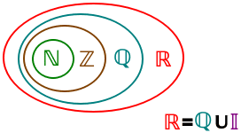

¿Qué vamos a estudiar y por qué?
Los números y las operaciones forman parte de muchas situaciones de nuestra vida diaria, aunque a veces no nos demos cuenta. Los utilizamos cuando calculamos cuánto vamos a pagar, comparamos precios, hacemos descuentos, repartimos una cantidad, calculamos un tiempo o interpretamos datos.
Por eso, en este bloque vamos a repasar y mejorar nuestra forma de trabajar con números, fracciones, porcentajes, proporciones, potencias y raíces. También aprenderemos a aproximar cantidades y a utilizar las propiedades de las operaciones para calcular de forma más sencilla.
Estos contenidos son importantes porque nos ayudan a resolver problemas de la vida real, tomar decisiones y entender mejor la información que nos rodea. Además, son una base necesaria para poder avanzar en otros contenidos de Matemáticas de 4.º ESO.
La idea no es aprender un montón de reglas de memoria, sino entender qué estamos haciendo, por qué lo hacemos y saber cuándo podemos utilizarlo.
Un resumen de lo que vamos a ver
1. Conjuntos numéricos
Los números se pueden clasificar en diferentes conjuntos numéricos según sus características.
- Naturales (): sirven principalmente para contar: 0, 1, 2, 3…
- Enteros (): incluyen los naturales y sus opuestos (resuelven el el problema de poder sumar y restar): …−3, −2, −1, 0, 1, 2, 3…
- Racionales (): son los números que se pueden escribir como una fracción de dos números enteros, con denominador distinto de cero. Por ejemplo, , o . Son números decimales con una cola decimal fininta o infinita pero que se repite periódicamente.
- Reales (): incluyen todos los números racionales y también los irracionales (: son números decimales con una cola decimal infinita que NO se repite periódicamente), como o .
Estos conjuntos están relacionados entre sí: los naturales forman parte de los enteros, los enteros forman parte de los racionales y los racionales forman parte de los reales. Gráficamente podemos verlo como:

2. Aproximación
En muchas situaciones no necesitamos conocer un número con todos sus decimales. Podemos utilizar una aproximación.
Las formas más habituales son el redondeo y el truncamiento. Al aproximar un número estamos sustituyendo su valor exacto por otro más sencillo y debemos conocer el error que estamos cometiendo.
El error absoluto mide cuánto se aleja la aproximación del valor exacto. También podemos utilizar el error relativo para conocer ese error en relación con el valor real.
3. Regla de tres
La regla de tres nos permite calcular una cantidad desconocida cuando conocemos una relación entre varias cantidades.
Puede ser:
- Directamente proporcional: cuando una cantidad aumenta, la otra también aumenta en la misma proporción.
- Inversamente proporcional: cuando una cantidad aumenta, la otra disminuye manteniendo la relación.
La regla de tres aparece en situaciones cotidianas como precios, cantidades, distancias, tiempo o consumo.
4. Porcentajes
Un porcentaje representa una cantidad de cada 100. Por ejemplo, el 25 % significa 25 de cada 100.
Los porcentajes se utilizan para expresar aumentos, descuentos, partes de una cantidad, impuestos, intereses o comparaciones.
Para trabajar con porcentajes es importante saber pasar entre porcentaje, fracción y número decimal. También debemos distinguir entre calcular un porcentaje de una cantidad y aumentar o disminuir una cantidad en un determinado porcentaje.
5. Propiedades de la suma y la multiplicación
Las operaciones tienen unas propiedades que nos permiten realizar cálculos de forma más sencilla y comprender mejor cómo funcionan los números.
En la suma destacan:
- Conmutativa: podemos cambiar el orden de los sumandos.
- Asociativa: podemos cambiar la forma de agrupar los sumandos.
- Elemento neutro: el 0 no cambia el resultado.
- Elemento opuesto: todo número real tiene otro número que, al sumarlo, da 0.
En la multiplicación destacan:
- Conmutativa: podemos cambiar el orden de los factores.
- Asociativa: podemos cambiar la forma de agrupar los factores.
- Elemento neutro: el 1 no cambia el resultado.
- Elemento absorbente: cualquier número multiplicado por 0 da 0.
- Elemento inverso: un número distinto de 0 tiene otro número que, al multiplicarlo por él, da 1.
Además, la multiplicación es distributiva respecto de la suma y de la resta.
6. Racionales (fracciones)
Una fracción representa una parte de un todo o una división. Está formada por un numerador (lo que se reparte) y un denominador (entre cuántas partes se reparte).
Podemos encontrar fracciones equivalentes, simplificar fracciones y realizar las operaciones básicas: suma, resta, multiplicación y división.
Para sumar o restar fracciones con distinto denominador necesitamos buscar un denominador común. Para multiplicar, multiplicamos numeradores y denominadores. Para dividir, multiplicamos la primera fracción por la inversa de la segunda.
Las fracciones también pueden escribirse como números decimales y porcentajes.
7. Potencias y raíces
Una potencia es una forma abreviada de escribir una multiplicación repetida. En ella aparecen la base (el número que se multiplica) y el exponente (cuántas veces se multiplica).
Las potencias tienen propiedades que permiten simplificar operaciones, especialmente cuando tienen la misma base o el mismo exponente.
La raíz es la operación inversa de una potencia. Por ejemplo, buscar la raíz cuadrada de un número significa encontrar qué número, multiplicado por sí mismo, produce ese resultado.
Potencias y raíces son herramientas fundamentales para trabajar posteriormente con expresiones algebraicas, ecuaciones y otros contenidos matemáticos.
Importante: El objetivo no es solo aprender reglas de memoria, sino entender qué significa cada operación, cuándo utilizarla y cómo comprobar si el resultado tiene sentido.